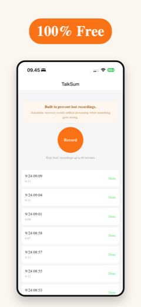
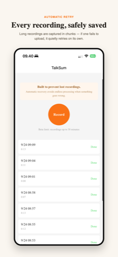
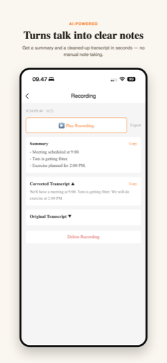

Record meetings, calls, or lectures. Get an AI summary and a clean transcript back — reliably, even when something goes wrong.
Download on the App StoreFree to use · iOS

Built so a bad connection never costs you a recording.
Long recordings are captured in reliable chunks. If one fails to upload, it quietly retries on its own — no lost recordings, no endless "processing" screens.
Every recording gets a concise summary of the key points, decisions, and action items — ready seconds after you stop recording.
Not just raw speech-to-text — an AI pass cleans up mishearings and punctuation, so the transcript actually reads like what was said.
No subscription, no paywall. Record, transcribe, and summarize at no cost.


Free to use · iOS